01 · The problem
In trading, colour means two things at once.
Most apps use green for success and red for errors. Trading apps also use green and red for price going up and down. And in some markets, like mainland China, red means up.
If one red token does both jobs, a normal price drop looks like something broke, and switching to Red-up would turn every error message green. So the whole system rests on one rule:
Principle
Separate value from intent.
A colour value (a hex code) should never decide what something means. Components ask for a meaning, like “price going down” or “error”, and the tokens decide the colour for the current mode.
02 · The spec
I wrote the spec before anything was generated.
I defined three token layers, two independent sets of modes, and the components and templates the system needed to support. That spec became the brief for the AI first pass, and the checklist for my audit.
Everything else
- PrimitiveRaw colours, spacing, radii
blue/500 · slate/900 · space/16 - SemanticMeaning, per Light or Dark
action/primary · feedback/error · surface/raised - ComponentsOnly use semantic tokens
Button · Input · Tag · Order book
Price colours
- PrimitiveRaw gain and loss colours
green/700 · rose/700 - MarketGreen-up or Red-up
market/up · market/down - SemanticPrice meaning
price/up · price/down
Two independent switches. Appearance (Light/Dark) and market convention (Green-up/Red-up) are stored separately, so there are four valid combinations, and direction never changes what “success” or “error” look like.
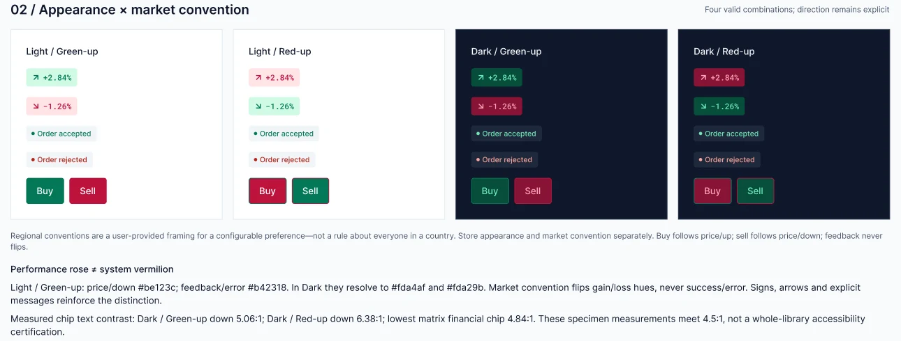
03 · Foundations
Foundations: colour, space, shape and type.
Five primitive colour ramps, a 4px spacing scale, six radius steps and ten type styles. Components never use these directly; they go through the semantic layer.
Numbers get their own font. Inter handles interface text, and Roboto Mono handles prices and balances, because equal-width digits keep columns of numbers lined up and stop prices from jumping as they update.
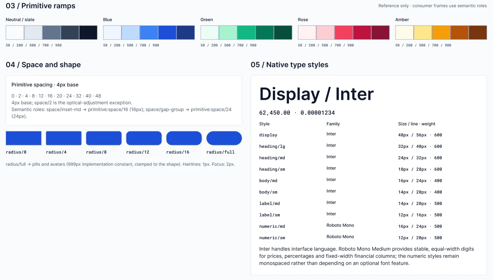
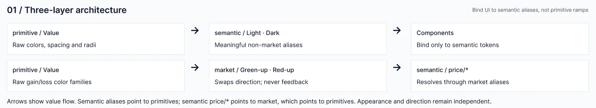
04 · Core components
Core components, each with a contract.
Six core components: Button, Input, Tabs, Tag, Toast and Segmented control. Each page documents every state, the public properties, and the rules for using it, so designers and engineers make the same decisions.
Button
Blue for actions. Green and red only for Buy and Sell. Loading keeps the same size and blocks double-submitting an order.
Input
Units like “BTC” sit outside the editable value, so they never shift as you type. Errors use the error colour, never “price down”.
Tag
“Filled” is always success, in Green-up and Red-up. Tags show status, never price movement.
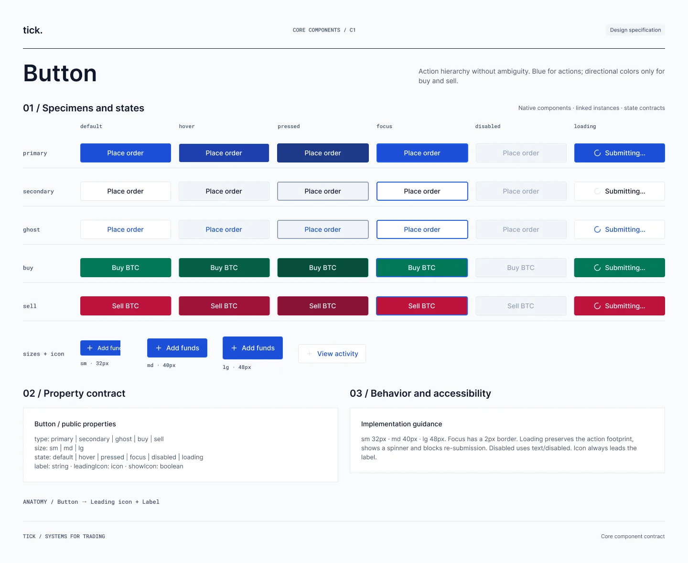
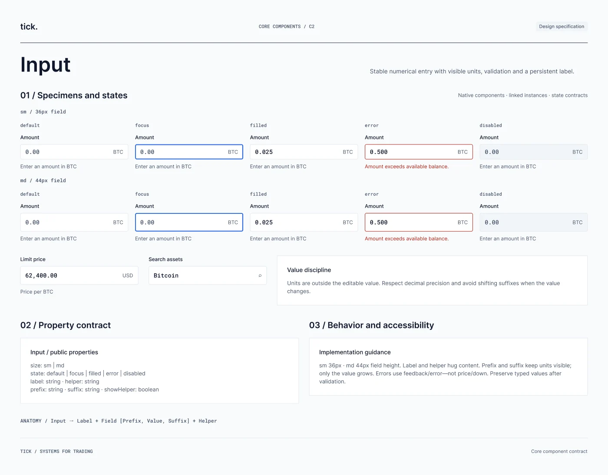
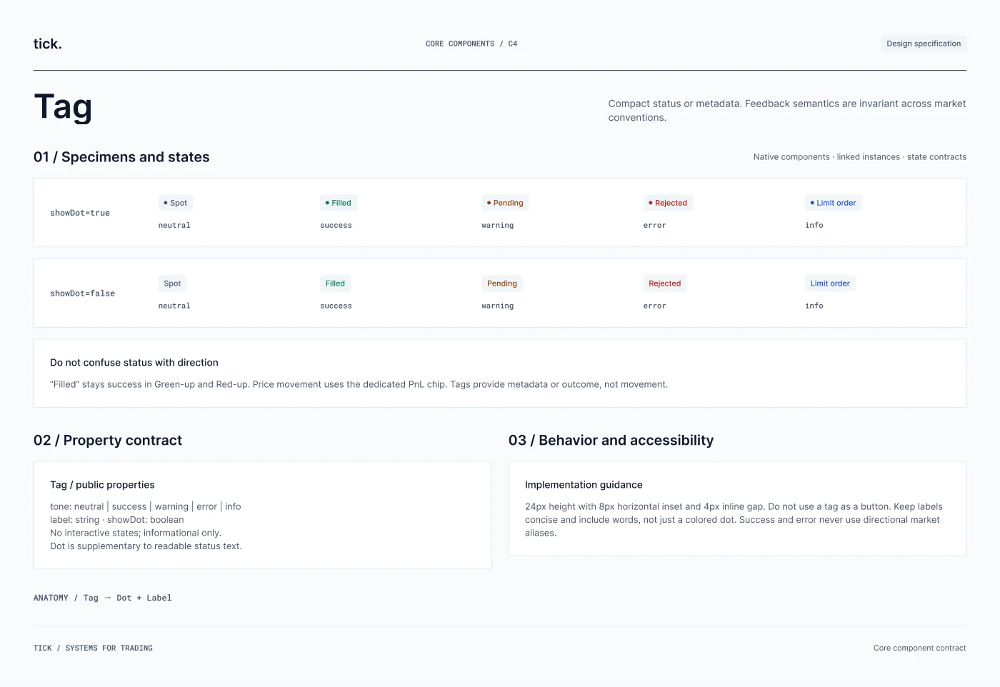
05 · Templates
Templates prove the tokens work.
I built Trade and Wallet templates for desktop and mobile, then rendered each one in Light · Green-up and Dark · Red-up. If the tokens were wired correctly, only the colours should change, never the layout or meaning.
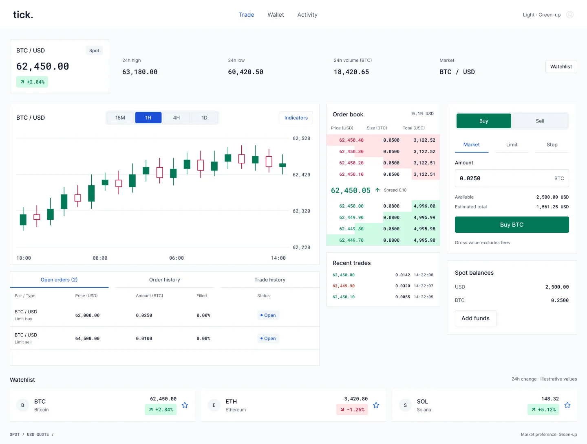
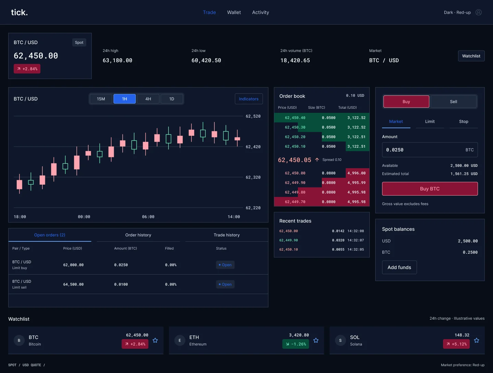
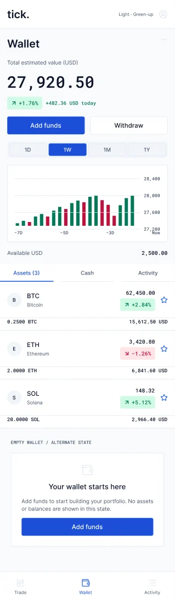
Light · Green-up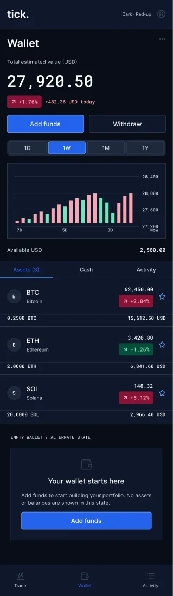
Dark · Red-up06 · Explorations
Three directions I didn’t ship.
I explored three visual directions on top of the same tokens: glassmorphism, a pastel “pop” wallet and an electric blue one. None were adopted into the core library.
Why glass lost: it looked calm, but blur and gradients behind prices change contrast depending on what’s underneath. On a dense trading screen, numbers have to be readable every time, so I kept solid surfaces and noted glass as an option for lighter onboarding screens.
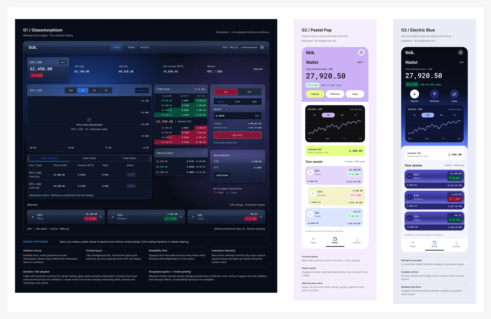
07 · The audit
AI did the first pass. I checked the parts that matter.
I used Figma’s AI agent to generate the first version, then audited the main components and token values instead of the documentation pages.
What I found: clipped button variants, wrong buy/sell totals, crossed order-book data, and a price-down colour that clashed with error red.
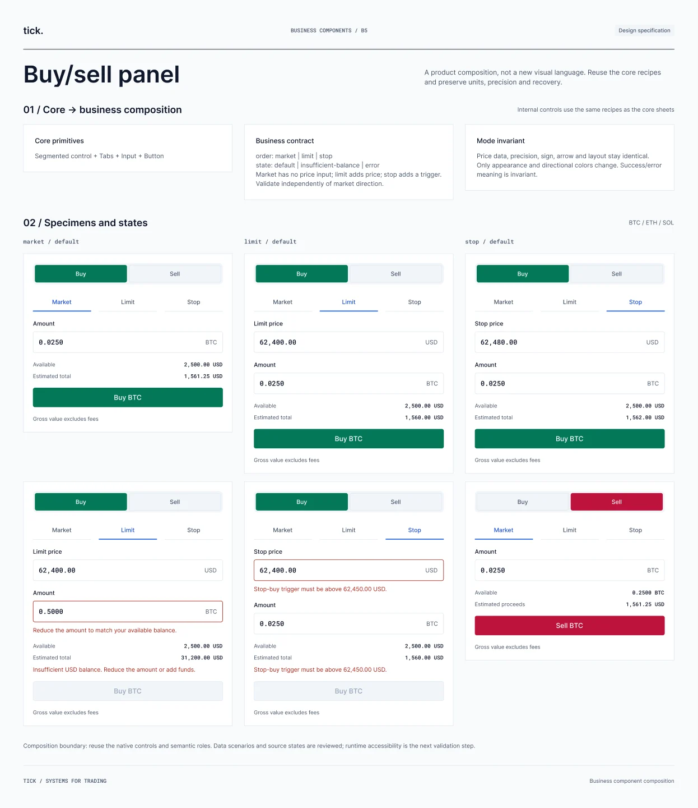
08 · The fixes
Every fix is logged with before and after.
I directed each fix and documented it with before/after screenshots, so anyone using the system can see what changed and why.
What I learned: AI makes a fast first draft, but checking the numbers and states is still my job.
09 · Trade-offs
The calls I made, and what they cost.
Using AI changed where my time went. Less drawing, more checking.
Who makes the first draft?
AI first pass, then my audit (chosen)
Much faster to get every token and component on the page.
Build everything by hand (not chosen)
Fewer surprises, but far slower, and I’d have spent my time on layout instead of correctness.
Where should the audit focus?
Components and token values (chosen)
That’s what people build with. A wrong total on a buy/sell panel is a real bug.
The documentation pages (not chosen)
They looked polished, but errors there don’t ship into products.
What colour means “price down”?
Its own token, separate from error red (chosen)
Losing money isn’t an error. Mixing them makes a normal market move look like something broke.
Reuse the error red (not chosen)
Fewer tokens, but the meaning gets muddy.
What worked
- Green-up/Red-up as a mode, not hard-coded colours, so one system works for both market conventions.
- Logging every fix with before/after screenshots made the audit easy to review.
What I’d change
- I’d write acceptance checks into the spec up front, so the AI output could be checked against them.
- I audited the main components; a full pass on every variant is still to do.